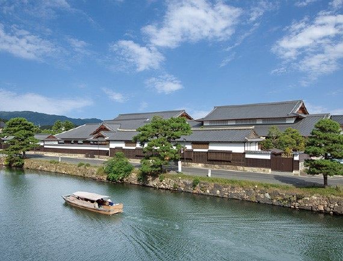

Traveling
SciSec 2022 will bs held in Matsue city, Shimane, Japan.
About Matsue city.
Matsue is the capital city of Shimane Prefecture, in Southwest Japan. Known as the “City of Water”, Matsue stands by the Sea of Japan where Lake Shinji and Nakaumi meet, in the middle of Shimane Peninsula.
A former feudal stronghold, Matsue is a true castle town crossed with many canals and boasts one of the twelve remaining original castles in Japan. Famous for its beautiful sunsets over Lake Shinji, Matsue also prides itself on having been the adopted home of the writer Lafcadio Hearn, who became one of the first Westerners to take Japanese citizenship under the name of Koizumi Yakumo.
As an International City of Culture and Tourism, Matsue offers great sightseeing opportunities and welcomes international tourists with significant discounts. Matsue and its surrounding areas are rich in cultural assets and historical sites, and many of Japan's most ancient legends are set in the area.
Matsue City Centre is bisected by the Ohashi River, and many places of interest that are easily accessible on foot from Matsue Station are concentrated in this area. For example, Lake Shinji is one kilometer away from the station and Matsue Castle is two kilometers.
The north side is where the Castle and its surrounding moats are. There, in addition to visiting the castle, you can enjoy a cruise around it on the Horikawa Sightseeing Boat and experience old Japan on a picturesque traditional Japanese street (Shiomi Nawate Street), among many other places to visit.
The south side is home to many Shinto shrines and Buddhist temples, as well as the Shimane Art Museum, located on the shore of Lake Shinji.
Attractions in Matsue.
More information can be find here